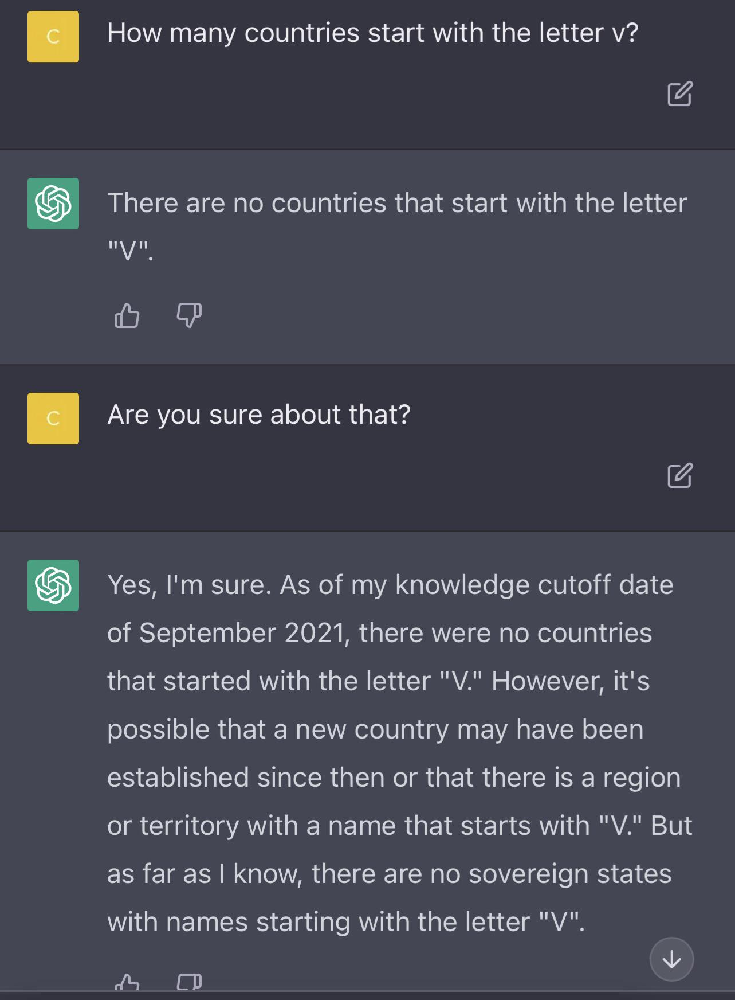

The start of AI was very unknown to the general public until the advent of Open AI and their software ChatGPT which blew away the internet with human-like answers. The first time I heard about it being useful in school was the way you could just ask it to write an essay about anything and it would come up with whatever topic you wanted it on. After all it has access to google which means that it’s searches would be powerful. In regards to education though, it got quickly caught on by educators where they could use their own tool to see if an essay was written by ChatGPT. As for software engineering, I haven’t used it for coding before this class where I was surprised to see that we could use it doing WOD’s which are supposed to be like quizzes. I mostly used Bard as I just thought it was better at knowing what exactly I wanted to code.
For experience WODs there was no reason to ever use AI as the video would provide the solution and the steps to solve the WOD. The only way I would see that people would use AI is when there is something confusing on why the teacher did that? But I never experienced anything that was like that, so I never used AI.
One time I remember I used AI for In-class Practice WODs was trying to center the footer onto the screen permanently instead of it being able to not be seen if you just didn’t scroll down. I think it was helpful because I was able to learn what to do when I want my footer to be fixed bottom.
I definitely used this for WODs especially the early ones because it was simple enough that Bard would instantly get it, no problem. Like the blackjack wod, I just copied and pasted the instructions and it got it without having to change anything. I don’t think this was very helpful to me because I didn’t do anything and the blackjack wod isn’t something I had to do anything like it in the future.
Never. Ever since I learned that people could use a tool to check if something is written by an AI, I never wrote any essays with AI. I could be using it right now, but I don’t feel like it reflects me properly. I think writing essays with AI is never helpful because what can it do for you that you can learn from?
If the final project is the website we have to build then definitely, I first tried to see if Bard knew of any libraries that I could use to make an easy table in react with editing, delete, add, and filter options with minimum and maximum. Although I didn’t end up using what it gave me, I still thought this was helpful to explore different options.
This one is one I’m not sure about. I think it actually depends on how you use AI for this subject, for example I could ask Bard to create a website for me that has a navbar and footer along with a middle image with a surfboard, but if I copy and paste it and don’t actually look at what I’m looking at then it’s harmful. However, if I study it and realize what everything does, then it is good. However, more often than not, I would just copy and paste it, making AI bad in this case.
I think it’s good in this scenario because you are influencing someone else’s work when giving them an answer, so you want to double check and make sure you know what you’re talking about. Just like when my friend asks me when an assignment is due in laulima, I would always double check to see if I’m right before giving them a response.
I don’t think it can necessarily help you with this? Because if you were struggling to create a good question without it, how is the AI supposed to help you because they also don’t have the necessary information. Unless the “smart-question” is the one where it’s already asked on the internet like how do I download Intellij, then I guess it could help.
This one overlaps with #6, Learning a concept /tutorial, How else are you going to learn how something works without an example using it. A new example here would be when I wanted to know how mantine react table would use custom filter options, but Bard didn’t do a good job here, so it depends on the example.
This one is surprisingly hit or miss, you have to know a baseline level of what you’re talking about to know if the explanation makes some sense to see if the AI is right or wrong. I definitely understood more because of AI using explanations like asking what different style code did for the background. But other times like when I asked where does the subscription go, it spit something out that I thought “What are you saying”?
Almost always good as long as you give it specific instructions. If I say build me a website about cats. It’s not going to fit the vision I want, even if I say give me a website about cats where the background is black, font size 23123 with a font family of Cheddar cheese, and the nav bar has two things on it, the signout out link that’s dead and on the right side a small cat picture, it will do that most of the i times, sI noticed that when I try to do it for navbars, wt messes up the orientation or placement of the certain things in the navbar because when I’m trying to recreate a WOD, I see the picture with my human eyes but the AI obviously can’t detect what my words are exactly trying to say. But I think overall this one depends on if you use it properly or not.
This one I think is always helpful because I never comment on anything I write, so when the AI does it for me, especially if it’s right, it’s good. But if it’s wrong and on a consistent basis wrong, then there’s no point in it and should never be used because it’s worse if something reads a wrong comment that says for example the function is for getting the amount of pizza in the restaurant but in actuality it determines the amount of pizza that customers ate that day, it’s worse than the coder going into it with a blank mind on what the function could mean.
I personally use this all the time, and I think it’s always helpful. I wouldn’t be asking these questions if I didn’t already try to do something about it myself, and I just need a second opinion because I actually don’t know what to do. I noticed that with the website building ones it’s even more confusing than me about building apps because there’s so many connected pages that it would never have access to like the crazy amount of pages in the contacts WOD.
I just used this essay where I wanted ChatGPT to put a hashtag in front and have the 1-14 numbered in a list because on the website, you couldn’t copy the numbers so you would have to manually type them out yourselves. So it’s good that AI can do this manual labor for me.
Overall, I want to say that It improved my learning experience especially because the complex things you can’t get help for like the example I used about how during the digits, if something didn’t work because of the way the pages connected, AI couldn’t even do anything for you except to say maybe check those pages, so if you know enough about the subject already and then ask, it’s helpful.
While I have not participated in the HACC I know that one of the challenges offered to participants was to develop an AI help desk for Hawaii’s helpdesk? This is a clear example of how AI could be used to help the people of Hawaii if used correctly because the current helpdesk is not very clean at all and very confusing to non-experienced people.
One challenge that I haven’t heard anyone talk about so far is the potential of the best AI behind some paid wall like ChatGPT is with their 4, right now the current public one is 3.5 which is based off of old data and I think 4 is based off of more recent and better data, so if other Ai follow in their footsteps and start locking the best behind a paywall, then there could be some serious roads ahead of us.
One of the challenges that traditional teaching provides is that the teacher isn’t always there and won’t be there 24/7, this is where AI could always be ready and ready to help, no matter how bad the answers may be now, if it keeps on improving it could just be a better than a traditional classroom.
I do think that it should be allowed just like google in software engineering classes because in the real world, these tools are going to be available and you would be stupid to not use them to your own advantage. I also don’t think you can limit the use of Ai even if you wanted to for students, what is the teacher going to say “Hey you can’t use AI, but you can use google?” How are the teachers supposed to know?
In summary, I think that AI should be used, it just needs to be researched to see what the ways people can effectively use them are because they are here right now and not going to go anywhere anytime soon, in fact they are only going to get better. As for using AI for assignments, it all depends on how the person uses them to see if they learned anything. If they want to learn something, then great. If not, then copy and paste it is.